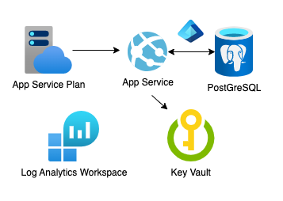

Aplicaciones web en Python:
Django
Conoce a Víctor Vázquez

Desarrollador en Microsoft (azd)
Redes sociales:
| @vhvb1989 | |
| GitHub | /vhvb1989 |
| in/vhvb1989 |
Temas de hoy

- Django 101
- 👩🏾💻 Ejercicio #1: Aplicación Django
- Depuración de Django
- Más sobre Django
- Django en Producción
- Alojamiento de Django
- 👩🏻💻 Ejercicio #2: Implementación de Django
Configuración para ejercicios
Para seguir los ejercicios, tienes las siguientes opciones:
-
Desarrollo en línea con Codespaces:Repositorios que utilizaremos:
- Desarrollo local con VS Code:
- Desarrollo local con cualquier editor:
Framework Django

Django, una biblioteca externa, es un framework con opiniones para el código del lado del servidor. Incluye un ORM para la interacción con la base de datos.
Algunas aplicaciones escritas en Django:
- Eventbrite
- Coursera (originalmente, ahora Scala+Play)
- Pinterest (originalmente, ahora Flask)
Ejemplo: Django + PostgreSQL
github.com/Azure-Samples/azure-django-postgres-flexible-appservice
aka.ms/django-pgflex-app
Ejecutar migraciones de la base de datos:
python3 src/manage.py migrate
Cargar datos de prueba:
python3 src/manage.py loaddata src/seed_data.json
Ejecutar el servidor:
python3 src/manage.py runserver 8000
Estructura del proyecto Django
Esta aplicación sigue una estructura de proyecto Django típica:
src/
manage.py
project/
__init__.py
asgi.py
settings.py
urls.py
wsgi.py
relecloud/
__init__.py
admin.py
apps.py
models.py
urls.py
views.py
templates/
La carpeta relecloud representa una "app" de Django.
Podemos agregar más "app"s al proyecto, cada una con sus propios modelos, vistas, urls, etc.
Modelos de Django
Los modelos son clases de Python que representan tablas de la base de datos.
from django.db import models
class Destination(models.Model):
name = models.CharField(unique=True, max_length=50, null=False, blank=False)
subtitle = models.CharField(unique=False, max_length=240, null=False, blank=True)
description = models.TextField(max_length=2000, null=False, blank=False)
🔗 Desde models.py
Para crear una migración:
python3 src/manage.py makemigrations
Para aplicar la migración:
python3 src/manage.py migrate
Vistas de Django
Las vistas pueden ser funciones simples de Python:
def index(request):
return render(request, "index.html")
O subclases de las vistas genéricas de Django:
class CruiseDetailView(generic.DetailView):
template_name = "cruise_detail.html"
model = models.Cruise
🔗 Desde views.py
Plantillas de Django
Las plantillas son archivos HTML escritos en lenguaje de plantillas de Django (similar a Jinja2):
<p>Este crucero visita los siguientes destinos:</p>
{% for destination in cruise.destinations.all %}
<a class="list-group-item list-group-item-action" href="{% url 'destination_detail' destination.id %}">{{ destination }}</a>
{% endfor %}
URLs de Django
Las URLs mapean rutas a vistas:
urlpatterns = [
path("", views.index, name="index"),
path("about", views.about, name="about"),
path("destinations/", views.destinations, name="destinations"),
path(
"destination/<int:pk>",
views.DestinationDetailView.as_view(),
name="destination_detail",
),
path("cruise/<int:pk>", views.CruiseDetailView.as_view(), name="cruise_detail"),
path("info_request", views.InfoRequestCreate.as_view(), name="info_request"),
]
🔗 Desde urls.py
Administrador de Django
Django incluye una interfaz de administrador incorporada para gestionar datos.
admin.site.register(models.Cruise)
admin.site.register(models.Destination)
admin.site.register(models.InfoRequest)
🔗 Desde admin.py
Para iniciar sesión en la interfaz de administrador:
- Crea un superusuario:
python3 src/manage.py createsuperuser - Reinicia el servidor y navega a "/admin"
- Inicia sesión con las credenciales del superusuario.
Ejercicio: Aplicación Django
Usando este repositorio:
github.com/Azure-Samples/azure-django-postgres-flexible-appservice
aka.ms/django-pgflex-app
- Sigue los pasos del archivo README para ejecutar la aplicación.
- Inspecciona las tablas de la base de datos local utilizando la extensión SQLTools.
- Sigue los pasos del archivo README para acceder al administrador de Django.
- Agrega un nuevo destino utilizando el administrador de Django.
- Cambia la ruta de los destinos para ordenarlos por nombre, utilizando order_by.
Depuración en VS Code

Depuración de código Python
.vscode/launch.json:
{
"version": "0.2.0",
"configurations": [{
"name": "Python: Django",
"type": "debugpy",
"request": "launch",
"program": "${workspaceFolder}/src/manage.py",
"args": [
"runserver"
],
"django": true,
"justMyCode": true
}]}
En settings.py:
DEBUG_PROPAGATE_EXCEPTIONS = env("DEBUG") # True localmente
Depuración de plantillas
Agrega al archivo .vscode/launch.json:
{
"version": "0.2.0",
"configurations": [{
"name": "Python: Django",
"type": "debugpy",
"request": "launch",
"program": "${workspaceFolder}/src/manage.py",
"args": [
"runserver"
],
"django": true,
"justMyCode": true,
"jinja": true // Agrega esta línea
}]}
Más sobre Django

Extensiones populares de Django
- Django Debug Toolbar para depuración
- Django Crispy Forms para estilizar formularios
- Django Allauth para autenticación
- Django Storages para almacenamiento en la nube
- Django Honeypot para prevención de spam
Aplicaciones Django
en Producción

Ejecutando la aplicación Django localmente
Usando el servidor integrado de Django:
python3 -m src/manage.py runserver 8000
⚠️ Pero el servidor de desarrollo no se recomienda para uso en producción.
Ejecutando Django con gunicorn
Gunicorn es un servidor de nivel de producción que puede ejecutar múltiples procesos de trabajo.
Agrega gunicorn a requirements.txt:
gunicorn==22.0.0
Usa gunicorn para ejecutar la aplicación Django con múltiples procesos de trabajo:
python3 -m gunicorn project.wsgi --workers 4 --bind 0.0.0.0:8555
Configurando gunicorn
Gunicorn se puede configurar con un archivo gunicorn.conf.py:
import multiprocessing
max_requests = 1000
max_requests_jitter = 50
log_file = "-"
bind = "0.0.0.0:8000"
workers = (multiprocessing.cpu_count() * 2) + 1
threads = workers
timeout = 600
El comando de ejecución se puede simplificar a:
python3 -m gunicorn project.wsgi
Alojamiento de Django

Opciones de alojamiento de aplicaciones en Azure
- ¿Cuánto control deseas tener?
- ¿Cuánto disfrutas administrar sistemas?
- ¿Necesitas que la aplicación pueda escalar vertical u horizontalmente?
| Azure Container Apps | Azure Functions | |||
| Azure Kubernetes Service | Administración de contenedores | Azure App Service | Serverless | |
| Entorno | Contenedores | PaaS | ||
| Nube | Azure | |||
Para Django, la forma más sencilla de comenzar es utilizar App Service.
Opciones de base de datos relacional en Azure
Consideraciones:
- ¿Cuánto almacenamiento de base de datos necesitas?
- ¿Cuántas lecturas/escrituras de base de datos esperas?
- Disponibilidad: ¿Política de respaldo? ¿Múltiples réplicas?
- Soberanía de datos: ¿Dónde se puede almacenar tus datos?
| Opción | Descripción |
|---|---|
| Azure Database for PostgreSQL - Flexible Server | La oferta más reciente de Microsoft para PostgreSQL. Servicio completamente administrado con escalado vertical. |
| Azure Cosmos DB para PostgreSQL | Base de datos distribuida que utiliza PostgreSQL y la extensión Citus. Puede escalar horizontalmente. |
| Azure SQL Database | Servicio administrado de Microsoft para SQL Server. Se puede utilizar en Django a través de microsoft/mssql-django |
Conexión segura de App Service a PostgreSQL
⭐️ En producción, utiliza autenticación sin contraseña para la base de datos:
- Deshabilita la autenticación por contraseña en PostgreSQL
- Establece el usuario de Microsoft Entra como administrador de PostgreSQL
- Crea un service principal para la aplicación de App Service y otórgale acceso a la base de datos
- Obtén un token como la aplicación y úsalo como contraseña de conexión a PostgreSQL
- Obtén periódicamente un nuevo token para evitar la expiración
Consulta aka.ms/django-quiz-app
⚠️ Si es necesario utilizar una contraseña, almacénala en Azure KeyVault.
Consulta aka.ms/django-quiz-app
Almacenamiento de la clave secreta
Django requiere una clave secreta para la seguridad, definida en settings.py:
SECRET_KEY = os.environ.get("SECRET_KEY")
Para producción, almacena esto en un lugar seguro, como Azure Key Vault. 🔑
Para obtener el valor secreto, utiliza una referencia de Azure Key Vault en las variables de entorno:
SECRET_KEY: '@Microsoft.KeyVault(VaultName=${keyVaultName};SecretName=djangoSecretKey)'
(También es posible en Configuración de la aplicación de contenedor)
Servir archivos estáticos
Algunas opciones para servir archivos estáticos de manera eficiente en producción:
- Usar Whitenoise
para servir archivos estáticos directamente desde Django, con compresión y encabezados de caché.
Como se muestra en aka.ms/django-quiz-app.
- Usar Django Storages
para servir archivos estáticos desde almacenamiento en la nube (como Azure Blob Storage).
Como se muestra en tonybaloney/django-on-azure.
Ambas opciones podrían ser utilizadas opcionalmente con un CDN (Azure Front Door) al frente.
Arquitectura de Azure para Django + PostgreSQL
Una posible arquitectura:

Ejercicio: Implementar Django + PG
Usando este repositorio:
github.com/pamelafox/django-quiz-app
aka.ms/django-quiz-app
- Abre en GitHub Codespaces o en VS Code con la extensión Dev Containers.
- Regístrate en una cuenta gratuita de Azure.
- Sigue las instrucciones de implementación en el archivo README.
- Si se implementa correctamente, visita la URL del punto de conexión para confirmar que funciona.
- Ejecuta
azd downpara desimplementar la aplicación (para no desperdiciar recursos en la nube innecesariamente).
Consideraciones adicionales de seguridad
Restringir el acceso a la red:
- ⭐️ Coloca la base de datos y la aplicación en la misma red virtual
Consulta https://aka.ms/django-restaurants - Si no puedes usar una red virtual, utiliza un firewall para restringir el acceso a la base de datos
Consulta aka.ms/django-pgflex-app
⚠️ El firewall aún permite el acceso desde otras aplicaciones alojadas en Azure.
Dificulta el acceso al administrador:
- Personaliza la URL del administrador
ADMIN_URL = os.environ.get("ADMIN_URL") - Utiliza django-admin-honeypot para detectar accesos no autorizados
Plantillas de Django en Azure
- Todas las variantes de la aplicación de turismo espacial:
- + Almacenamiento: github.com/tonybaloney/django-on-azure
- + VNet: github.com/Azure-samples/msdocs-django-postgresql-sample-app
- + Redis: github.com/pamelafox/cookiecutter-django-azure
También puedes consultar el tutorial de Django.
Más recursos de Azure

¿Alguna pregunta?